MyLodge Private Mansion (초호화 별장)
Global Network
PRIVATE MANSION / GLOBAL NETWORK
나 해외에 호화 별장 가진 사람이야.
꿈꾸기도 힘든 호화 별장 주인이 되다.
유명 휴양지에 나의 거점을 갖는 특별함. 머무는 즐거움과 사람을 초대하는 가치를 함께 만나보세요.
- 총 분양금
- 상품별 상담 안내
- 소유·이용 조건
- 계약 조건 확인
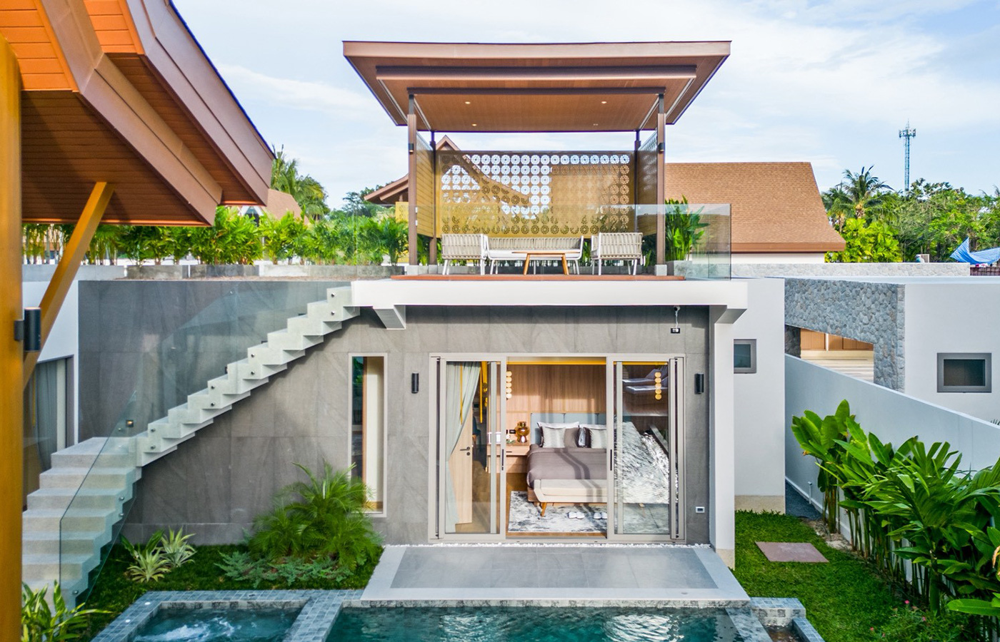
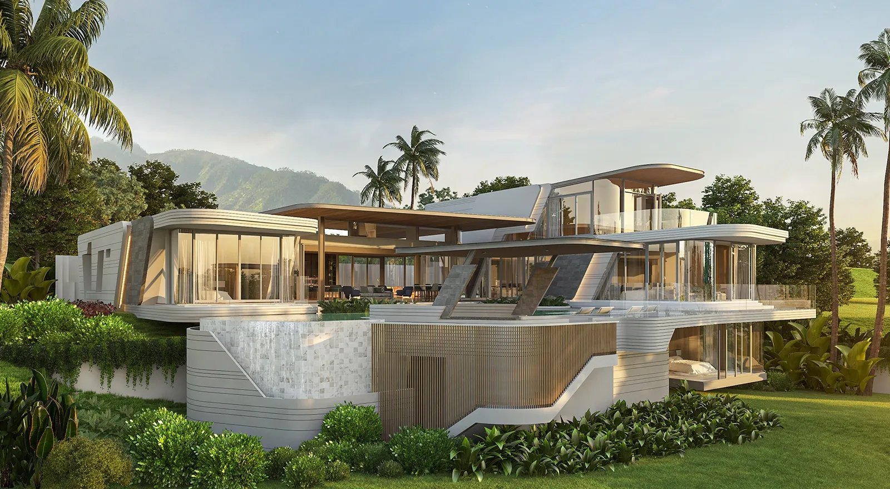
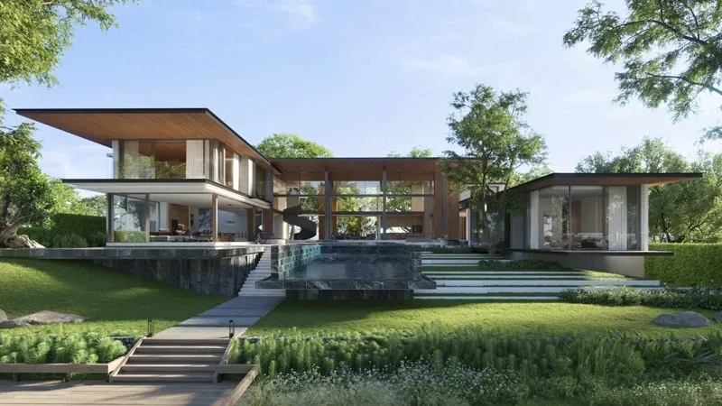
01 / ECONOMIC VALUE
머무는 가치부터, 비워 두는 시간의 활용까지
직접 누리는 휴양과 공간의 활용 가능성을 함께 살펴보세요. 머물 일정과 비워 둘 기간을 나누어 계획하고, 임대 운영이 가능한 상품은 비용과 운영 조건까지 확인할 수 있습니다.
- 직접 이용하는 기간을 먼저 계획
- 미사용 기간의 운영 가능 여부 확인
- 예상 비용과 수익 배분 조건을 함께 검토
임대 가능 여부와 수익 배분은 상품별 계약에 따릅니다. 수익률과 원금 회수는 보장하지 않습니다.
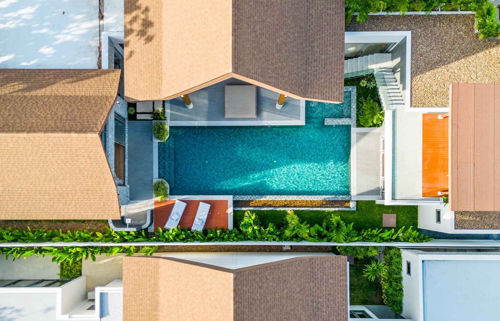
02 / VALUE FOR YOUR LIFE
얼마를 지불하고, 무엇을 누리는지 명확하게
참여 금액만큼 중요한 것은 그 비용으로 누리는 공간과 권리입니다. 위치와 시설, 이용 범위, 관리 비용을 한눈에 비교해 나에게 맞는 별장 라이프의 가치를 판단해 보세요.
가격과 포함 조건 확인하기→- 취득 비용과 포함 혜택
- 관리·이용에 드는 추가 비용
- 이용 기간과 권리 범위
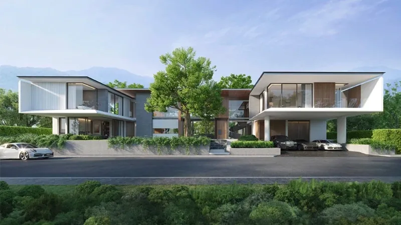
03 / YOUR PLACE IN THE WORLD
유명 휴양지에, 나의 거점이 생긴다는 것
찾아가는 여행지에서 다시 돌아가고 싶은 공간으로 시선을 넓혀 보세요. 세계의 휴양지와 연결된 나만의 거점을 중심으로 여행과 일상의 새로운 계획을 세울 수 있습니다.
- 익숙해지는 나의 해외 체류 공간
- 취향에 맞는 휴양지 선택
- 소유·이용 형태에 맞춘 장기 계획
소유권·지분·이용권 등 취득 권리의 형태와 실제 공급 지역은 상품별로 확인해 주세요.
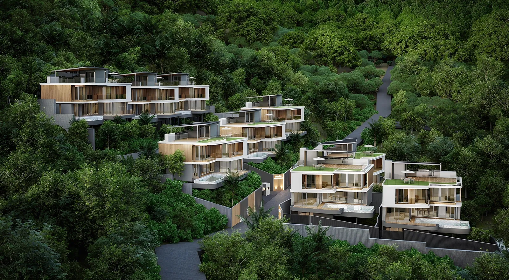
04 / IDENTITY UPGRADE
호화 별장 오너라는 새로운 나의 이야기
내가 좋아하는 공간을 선택하고 그곳에서의 시간을 설계하는 일은 나를 표현하는 또 하나의 방식입니다. 나만의 취향과 기준이 담긴 별장 라이프로 새로운 정체성을 그려보세요.
- 취향으로 선택한 공간
- 나의 생활을 담은 해외 거점
- 오너라는 이름으로 시작하는 새로운 이야기
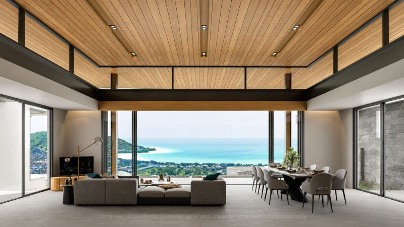
05 / A PLACE TO REMEMBER YOU
“다음에는 내 별장으로 초대할게.”
특별한 공간으로의 초대는 사람들에게 오래 기억될 이야기가 됩니다. 손님을 맞이하고 함께 머물 시간을 직접 준비하며 나만의 품격과 취향을 전해 보세요.
- 손님을 맞이하는 여유로운 공간
- 초대하는 사람의 취향과 배려
- 함께한 시간으로 남는 인상
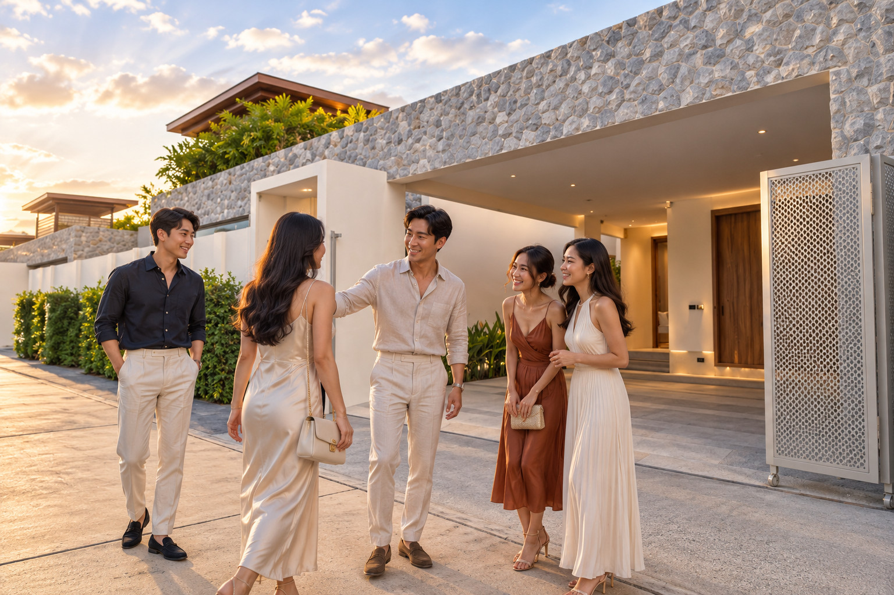
06 / NEW CONNECTIONS
사람이 모이고, 관계가 넓어지는 공간
취향이 맞는 친구를 초대하고 새로운 만남을 준비해 보세요. 함께 식사하고 여행을 이야기하는 편안한 공간에서 대화와 교류의 기회를 만들 수 있습니다.
- 친구와 함께하는 식사와 여행
- 취미와 관심사로 이어지는 모임
- 다음 만남을 약속할 나의 거점
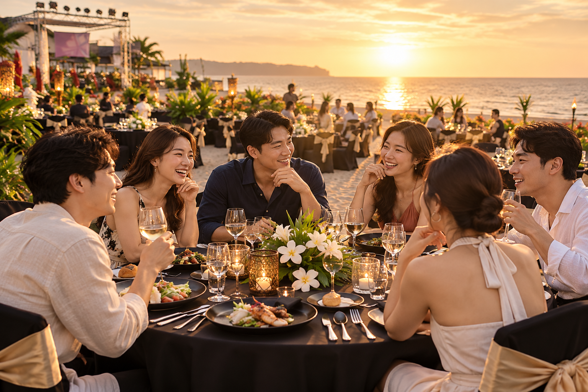
07 / TIME FOR TWO
좋아하는 사람과, 조금 더 특별한 시간
둘만의 저녁 식사와 느긋한 산책, 조용한 풀사이드의 시간을 준비해 보세요. 일상에서 벗어난 프라이빗한 공간이 서로에게 집중할 여유를 더합니다.
- 둘을 위한 프라이빗한 저녁
- 여유롭게 이어지는 대화
- 함께 만들어 가는 여행의 기억
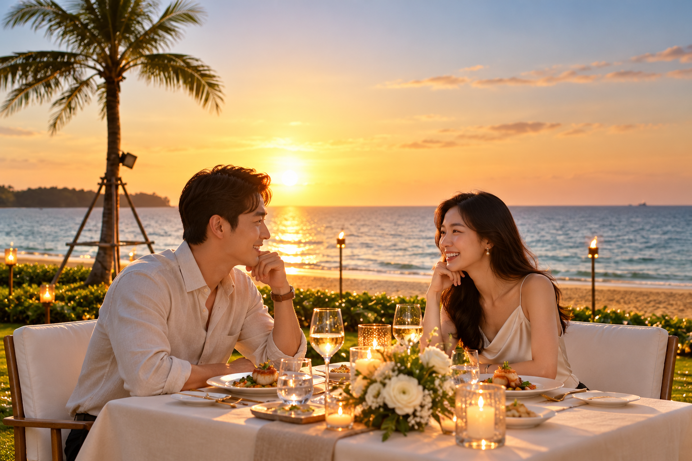
08 / YOUR NEXT CHAPTER
중요한 약속을, 오래 기억할 장면으로
프로포즈와 웨딩, 결혼기념일처럼 삶의 중요한 순간을 특별한 공간에서 그려보세요. 소중한 사람을 초대하고 나다운 방식으로 기념하는 시간을 계획할 수 있습니다.
- 둘의 다음 장면을 위한 공간
- 가까운 사람과 나누는 기념일
- 취향에 맞춰 준비하는 축하
웨딩·행사 진행 가능 여부, 정원과 별도 비용은 시설별로 확인해 주세요.
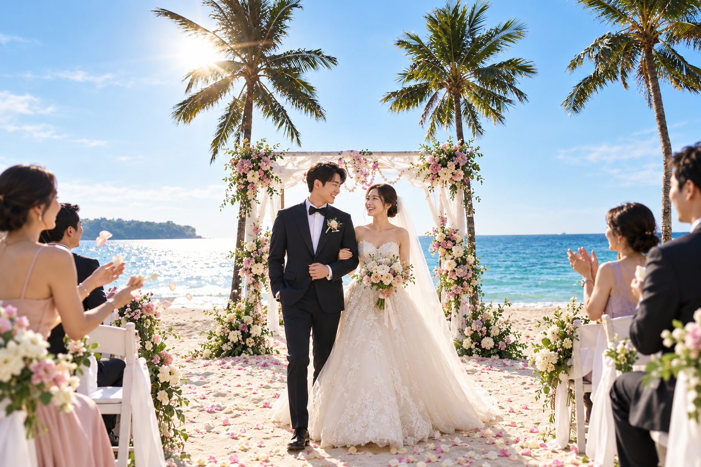
09 / BUSINESS & HOSPITALITY
비즈니스의 다음 대화를, 특별한 장소에서
중요한 파트너와의 식사나 소규모 미팅을 일상의 회의실 밖에서 준비해 보세요. 프라이빗한 공간에서 여유롭게 대화하며 관계를 이어 갈 수 있습니다.
- 파트너를 위한 초청과 식사
- 소규모 대화와 워케이션
- 장소의 분위기로 전하는 환대
업무·행사 목적의 이용 가능 범위와 방문객 규정은 시설별로 확인해 주세요.
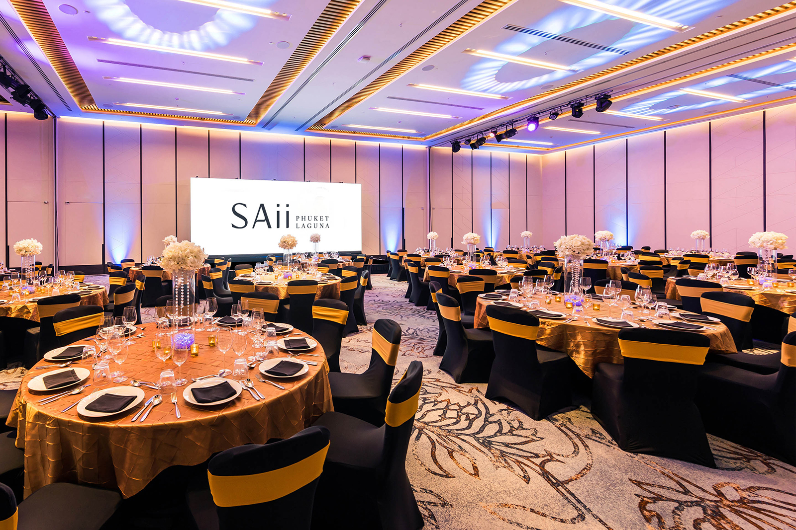
10 / TOGETHER, AT YOUR PACE
그리고, 소중한 사람들과 누리는 여유
별장 라이프의 다양한 가능성 끝에는 함께 시간을 보내는 즐거움도 있습니다. 가족과 친구가 각자의 속도로 쉬고 식사하며 다음에 다시 올 이유를 만들어 보세요.
- 함께 모이는 넉넉한 거실
- 각자의 휴식을 존중하는 시간
- 다시 찾고 싶은 우리의 기억
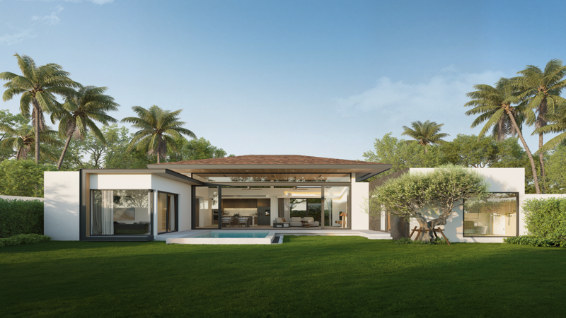
GLOBAL NETWORK / DESTINATIONS
푸켓에서 시작해, 더 넓은 생활을 그리다
푸켓 · 치앙마이 · 방콕
프라이빗한 휴양과 자연 속 체류, 도심의 편리함까지 관심 있는 지역의 생활을 살펴보세요. 실제 이용 가능한 지역과 시설은 상품별 안내를 기준으로 선택할 수 있습니다.
- 푸켓 · 해변과 풀빌라 라이프
- 치앙마이 · 자연 속 여유로운 체류
- 방콕 · 도시와 연결되는 생활
소개 지역의 모든 시설이 MyLodge 상품으로 제공되는 것은 아닙니다. 이용 가능 지역·시설·시기는 상품별로 확인해 주세요.
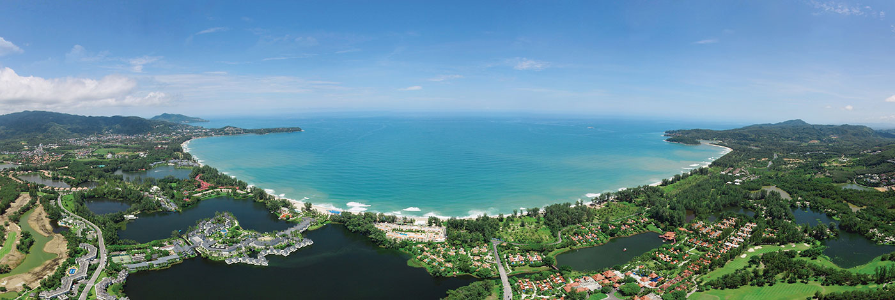
PRIVATE MANSION / SPACES
크게 열리는 거실, 나만의 프라이빗 풀
넓은 실내와 정원, 거실에서 이어지는 풀사이드처럼 머무는 방식을 바꾸는 공간을 살펴보세요. 외관부터 침실과 다이닝까지 큰 사진으로 각 공간의 분위기를 느껴보세요.
- 실내와 정원으로 이어지는 개방감
- 프라이빗 풀과 야외 라운지
- 머무는 사람을 위한 침실과 다이닝
사진은 고급 빌라 공간 참고 자료이며 실제 제공 시설과 구성은 상품별로 다릅니다.
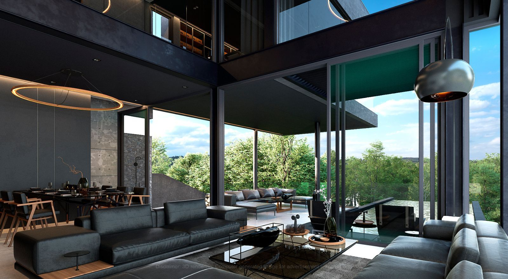
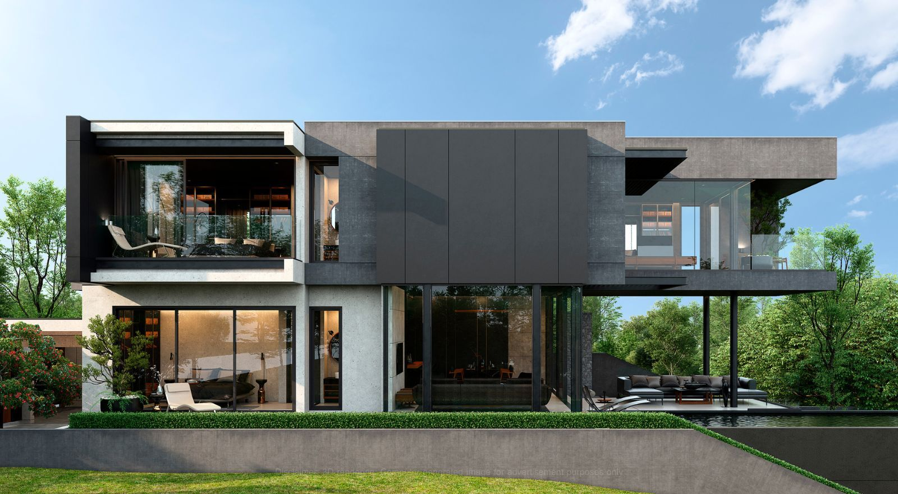
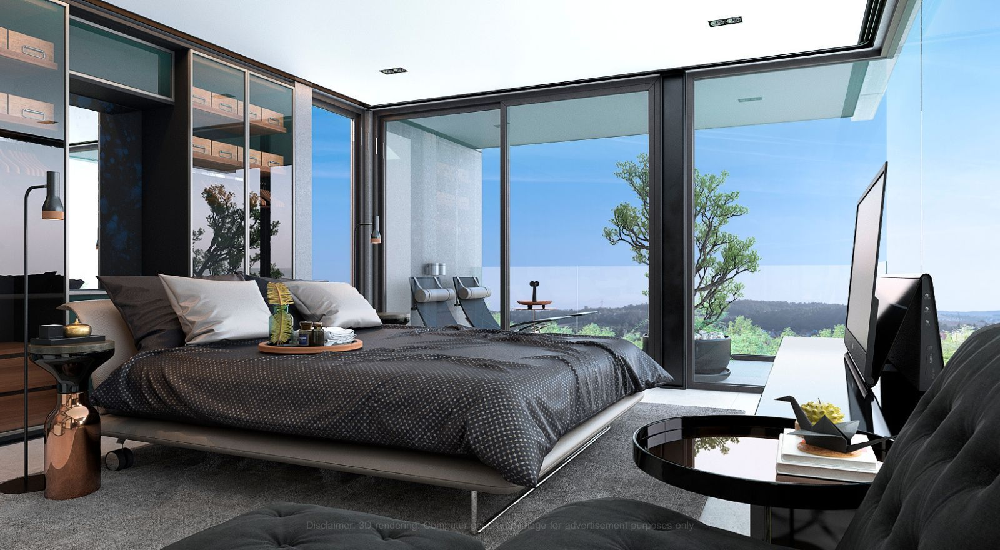
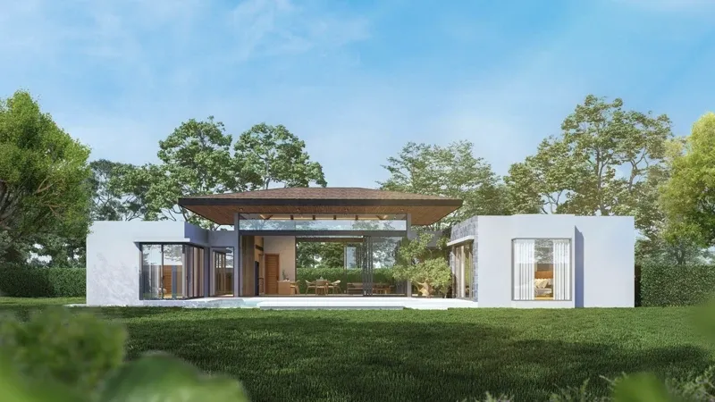
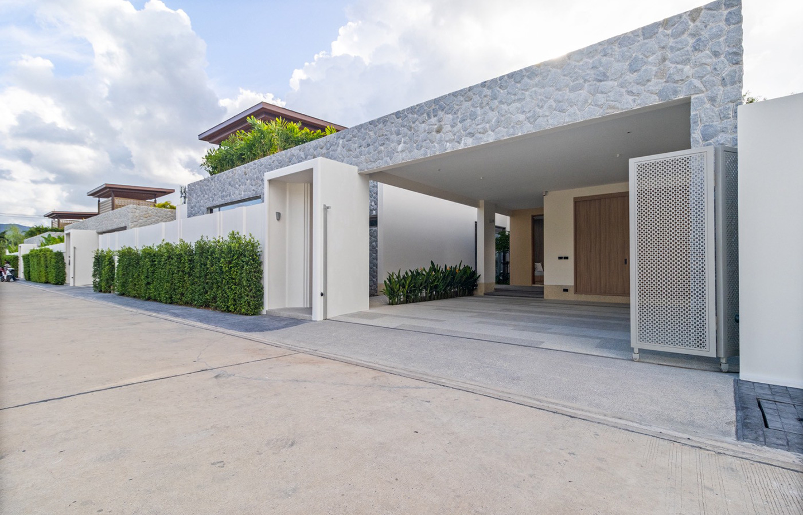
PRIVATE MANSION / CARE
머무는 시간에 집중할 수 있도록
공간을 고르는 만큼 체류 중의 관리와 편의도 살펴보세요. 청소와 시설 관리, 도착 전 준비 등 나에게 필요한 서비스를 확인하면 더 편안하게 체류를 계획할 수 있습니다.
- 도착 전 준비와 청소 범위
- 시설 관리와 문의 창구
- 서비스별 요금과 이용 가능 시간
관리·메이드·컨시어지 등의 포함 여부와 이용료는 해당 상품 안내를 확인해 주세요.
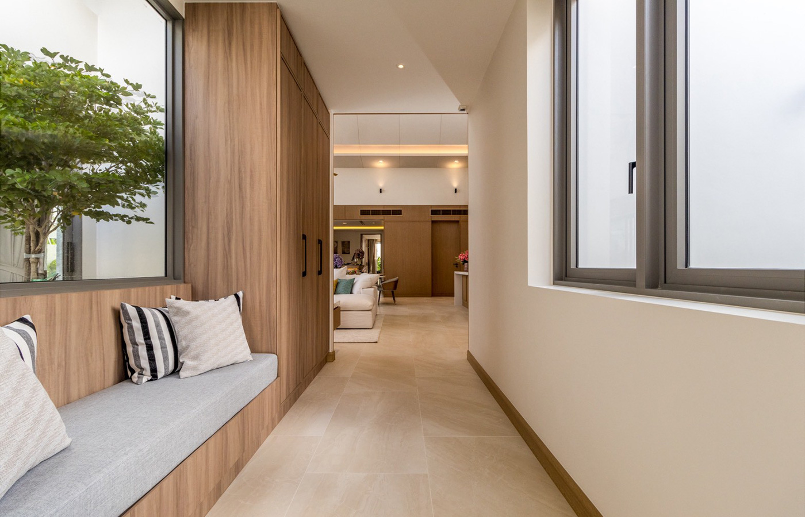
PRIVATE MANSION / OWNERSHIP & USE
오너가 되기 전, 나의 권리를 먼저 확인하세요
멋진 공간과 함께 어떤 권리를 취득하는지도 중요합니다. 소유·지분·이용권의 형태부터 이용 기간과 예약, 양도 조건까지 나의 계획에 맞춰 확인해 보세요.
- 취득 권리의 형태와 기간
- 이용일·예약·성수기 배정 기준
- 양도·상속·해지와 관련 비용
평생 소유·양도·상속 가능 여부는 확인된 해당 상품의 계약 내용에 한해 안내합니다.
계약 전에 확인할 조건
권리의 대상과 기간, 계약 상대방, 관리·운영 주체를 확인해 주세요. 별장 전체의 소유와 지분·이용권은 서로 다른 조건이므로 해당 상품의 계약 내용을 기준으로 판단해야 합니다.
- 이용 가능 지역·시설·시기
- 예약 변경·취소·성수기 배정 방식
- 관리비·세금·이용료 등 추가 부담
- 양도·상속·해지 가능 여부와 절차
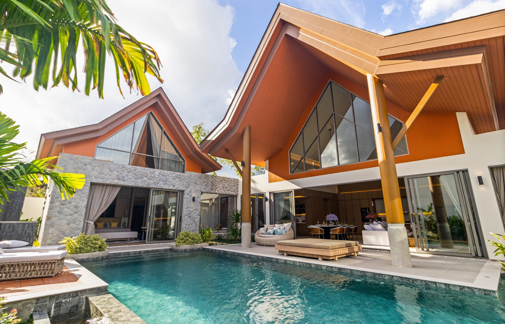
PRIVATE MANSION / PRICE & CONDITIONS
총 분양금과 포함 조건을 함께 확인하세요
선택한 상품의 총금액과 취득 권리, 포함 혜택을 한 번에 살펴보세요. 납입 일정과 관리·이용 비용까지 확인한 뒤 나에게 맞는 계획을 세울 수 있습니다.
- Private Mansion 금액
- 상품별 상담 안내
- 납입·추가 비용
- 해당 상품 조건 확인
- 총 분양금과 납입 일정
- 취득 권리와 포함 혜택
- 관리·이용에 필요한 별도 비용
Private Mansion의 가격·권리 조건은 상담에서 확인해 주세요. MyLodge Free의 기존 가격과 별도로 안내합니다.
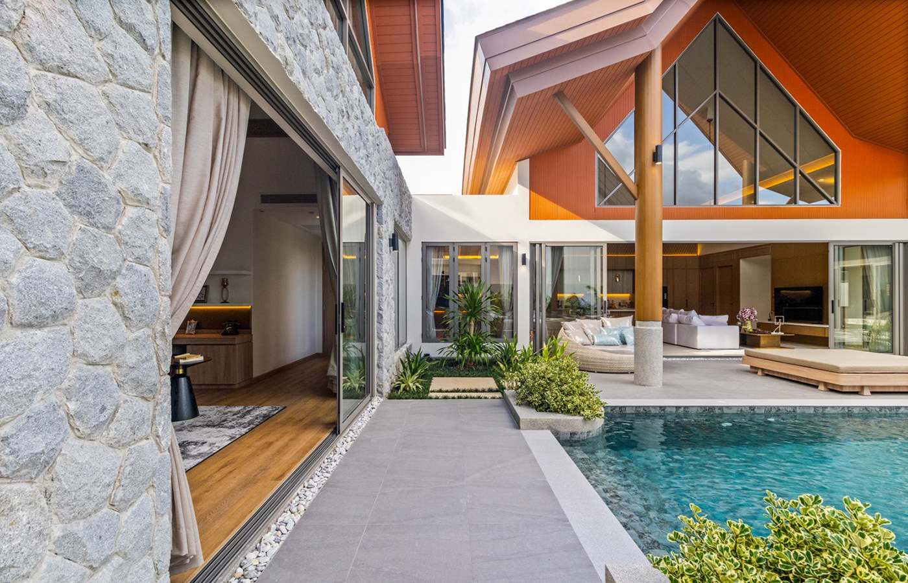
PRIVATE MANSION / BECOME AN OWNER
당신의 다음 이야기를 시작하세요
관심 지역과 원하는 체류 방식을 정리하고 상품별 조건을 확인해 보세요. HanzCity 계정으로 시작해 안내받은 신청·상담 절차를 진행할 수 있습니다.
HanzCity 계정으로 시작하기↗가격과 조건 다시 보기→- 01 · 관심 지역과 상품 확인
- 02 · 가격·권리·운영 조건 상담
- 03 · 안내받은 신청·계약 절차 진행
회원가입·로그인은 HanzCity에서 진행됩니다. 계정 생성만으로 소유권·구좌·예약이 확정되지 않으며, 신청·상담·계약은 별도 절차입니다.
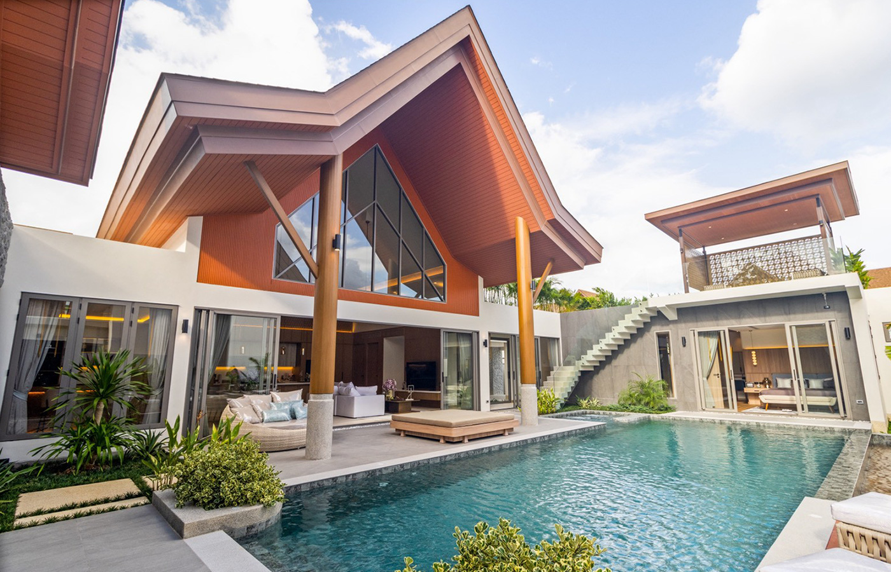
PRIVATE MANSION / QUESTIONS
결정하기 전에 궁금한 것들
가격과 권리, 실제 시설과 이용 방법까지 궁금한 조건을 차근차근 확인해 보세요. 나의 생활과 예산에 맞는 선택을 위해 필요한 정보를 정리했습니다.
- 무엇을 취득하게 되나요?
- 어디에서 얼마나 이용할 수 있나요?
- 추가 비용과 운영 조건은 무엇인가요?
사진에 있는 시설을 모두 이용할 수 있나요?
외부 공식 사이트 사진은 고급 빌라와 휴양 라이프스타일의 참고 자료입니다. MyLodge의 제공 시설이나 제휴를 뜻하지 않으며 실제 이용 시설은 해당 상품 안내에서 확인해 주세요.
평생 소유하거나 다른 사람에게 양도할 수 있나요?
취득 권리의 형태와 기간, 양도 가능 여부는 상품별 계약에 따라 다릅니다. 해당 조건을 확인한 뒤 결정해 주세요.
관리비와 이용료가 별도로 있나요?
관리·청소·예약·시설 이용에 따른 비용과 부담 주체를 상품별로 확인해 주세요. 총 분양금에 포함되는 항목과 별도 항목을 함께 안내받는 것이 좋습니다.
임대나 행사 목적으로 활용할 수 있나요?
임대·행사·업무 목적의 이용은 시설과 운영 조건에 따라 달라집니다. 가능 범위, 정원, 비용과 별도 절차를 확인해 주세요.
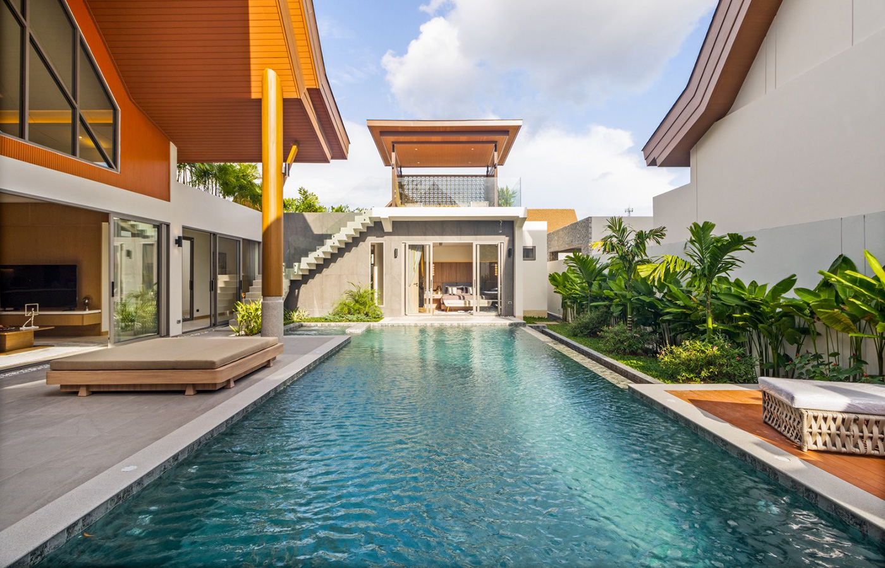
PRIVATE MANSION / LOOK CLOSER
눈으로 먼저 만나는 호화 별장 라이프
외관과 실내, 풀사이드와 휴양지의 풍경을 큰 사진으로 살펴보세요. 마음에 남는 공간과 원하는 체류 방식을 정리해 상품 상담에 활용할 수 있습니다.
소개 첫 화면으로→- 고급 빌라 외관과 프라이빗 풀
- 거실·침실·다이닝의 분위기
- 휴양지에서 그리는 나의 생활
제공받을 시설의 실물 사진과 영상은 해당 상품 안내에서 확인해 주세요. MyLodge Free의 3D 모델은 별도 소개에서 볼 수 있습니다.
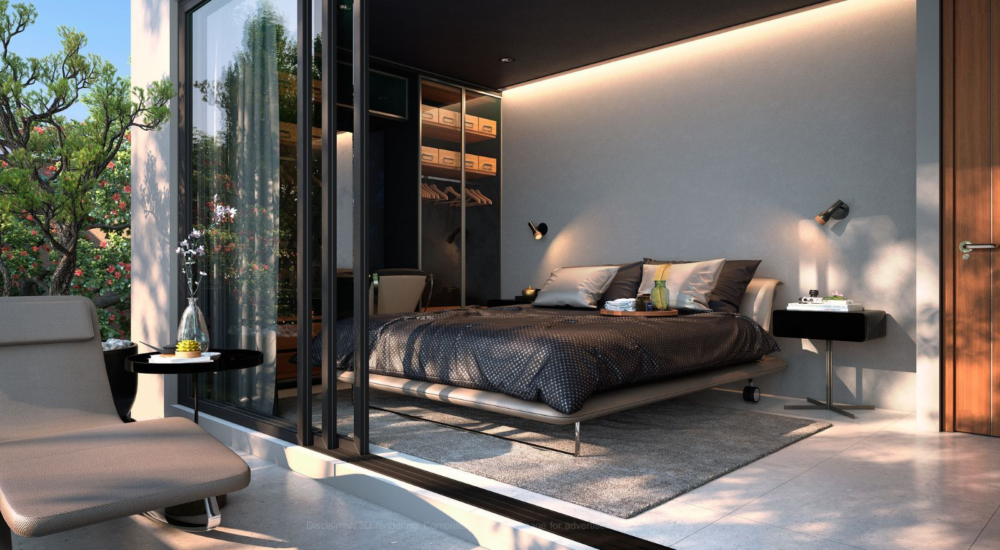
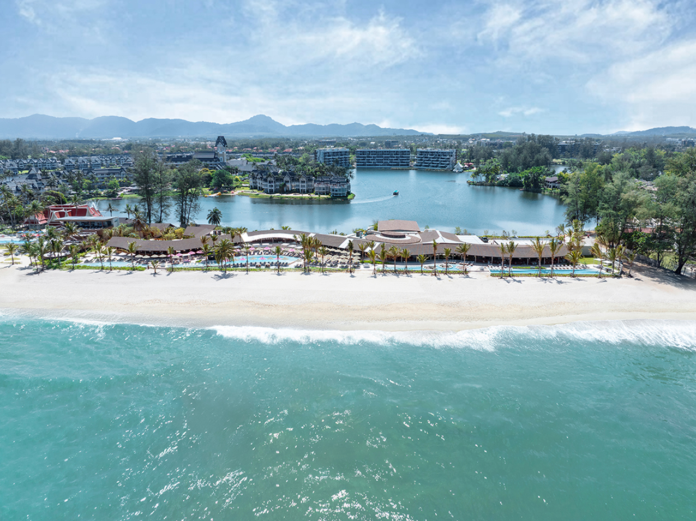
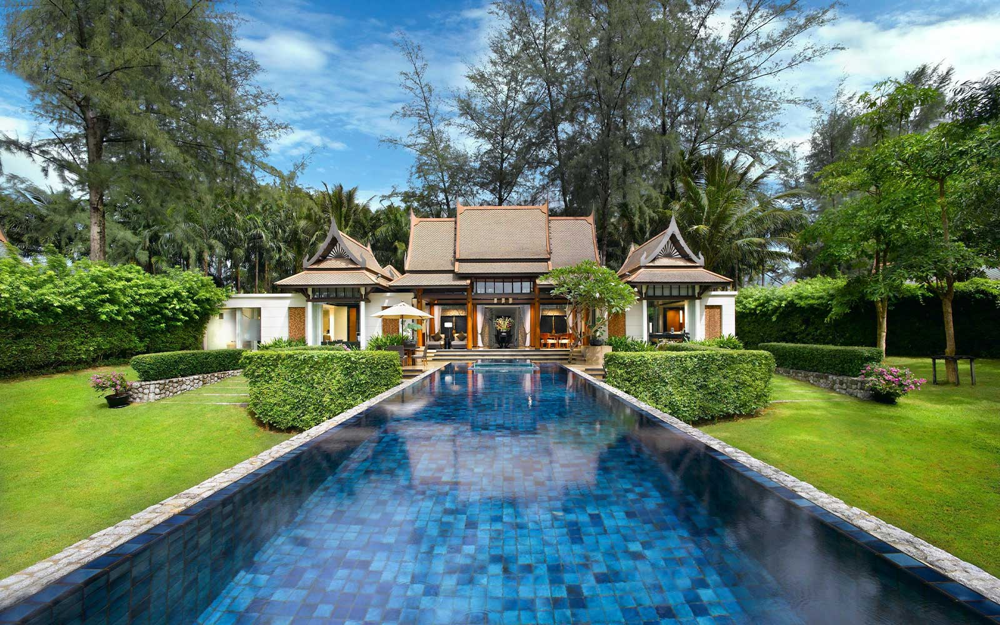
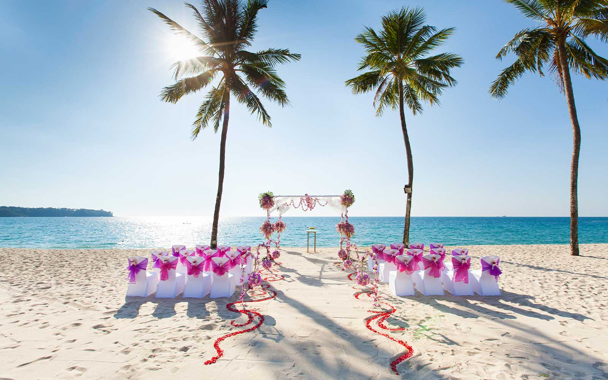
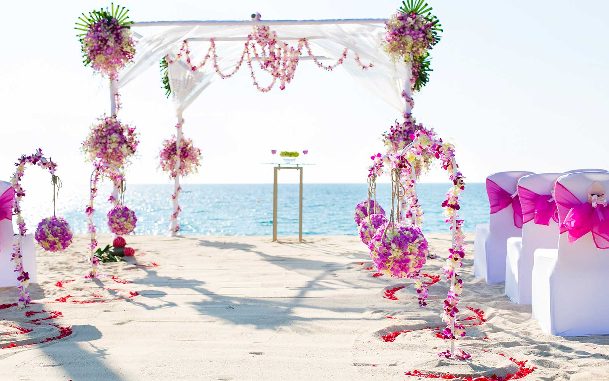
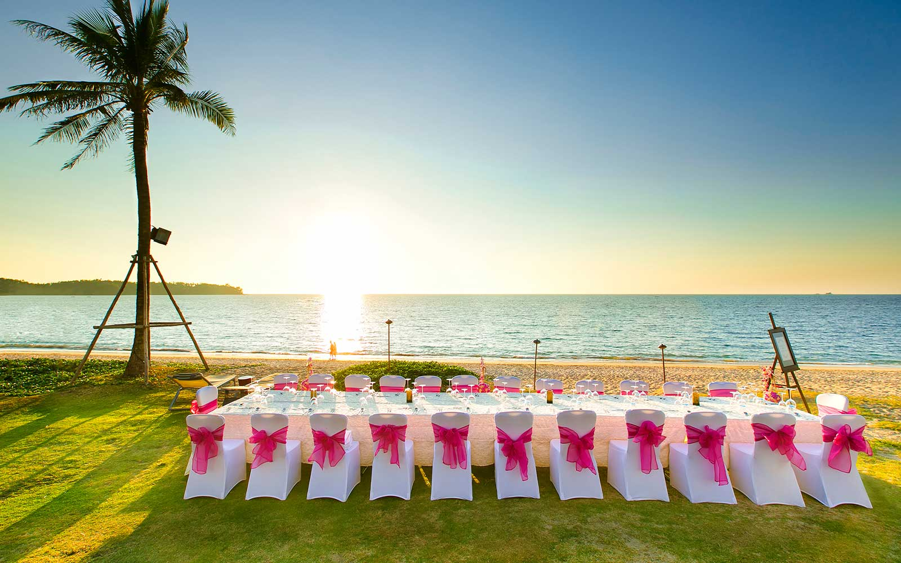
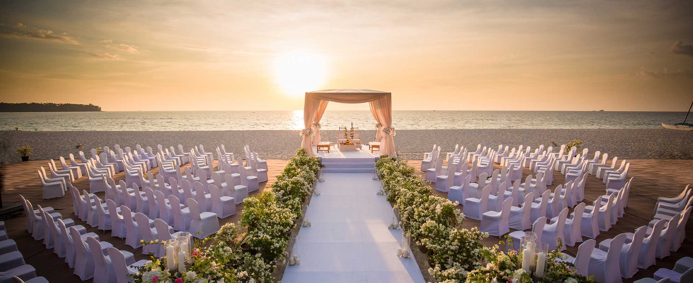
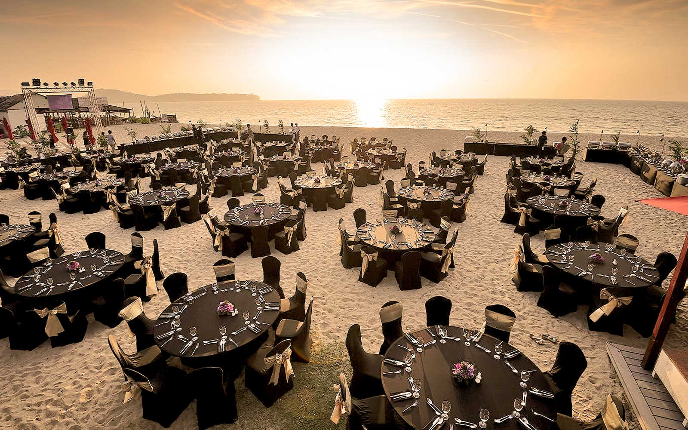
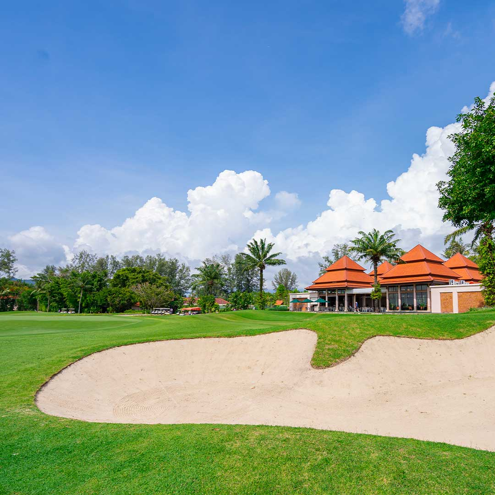
MYLODGE PRIVATE MANSION / YOUR NEXT CHAPTER
다음 여행의 목적지에, 나의 새로운 이야기를
공간을 누리는 즐거움과 사람을 초대하는 특별함, 나의 생활에 더해질 새로운 가능성을 만나보세요. 가격과 권리 조건을 확인하고 나에게 맞는 별장 라이프를 시작해 보세요.
호화 별장 오너 되러 가기→MyLodge Free도 살펴보기→- 유명 휴양지와 연결되는 나의 거점
- 오너라는 정체성과 다양한 활용
- 조건을 확인한 뒤 시작하는 새로운 계획
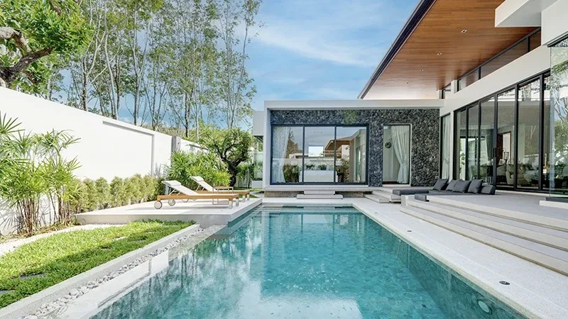